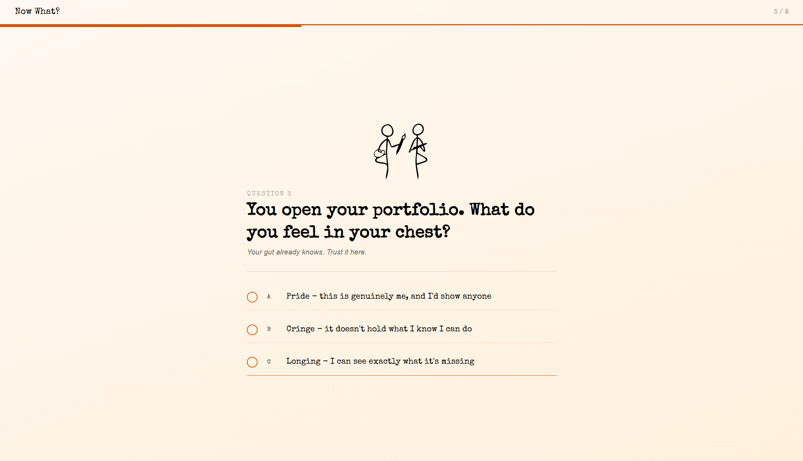
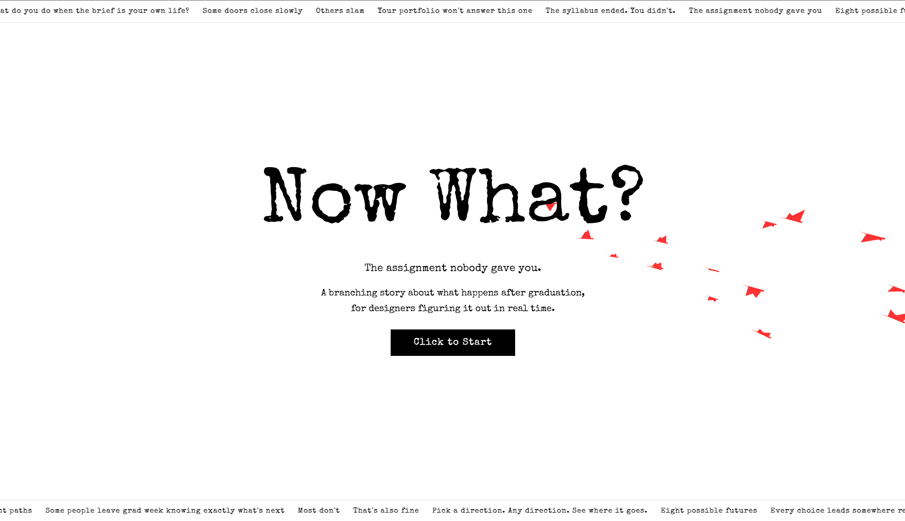
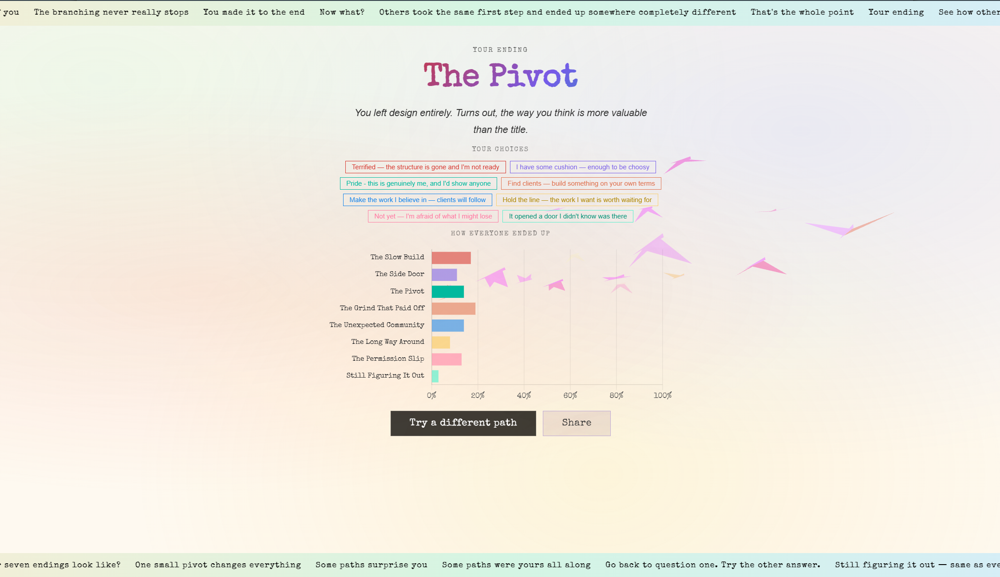

UX / UI Case Study : Capstone Project
Project Preview

A branching story about life after graduation, for designers figuring it out in real time.
"What do you do when the brief is your own life?"
Now What? is a choose-your-own-adventure web experience centered on the post-college transition. Rather than asking students the impossible question, "what are you doing after graduation?", the project breaks that anxiety into a series of smaller, more honest choices that branch into eight distinct futures.
The project reflects on how graduating designers navigate the scarcity mindset (the belief that opportunities are limited), the myth of a linear career path, and the pressure to have it all figured out immediately.
By framing these questions within an interactive narrative, the experience gives students permission to explore without a wrong answer, and to see, through real aggregated data, that their classmates are just as unsure.
The aesthetic mirrors the uncertainty and texture of the content: typewriter fonts, animated bird flocks, a scrolling news ticker. Everything feels like life in motion.
The research phase examined both the emotional landscape of post-graduation anxiety and the technical precedents for interactive, branching narrative experiences.
Abbott's empirical study on "Choose Your Own Adventure" as a teaching tool proved central to the project's philosophy. The research demonstrated that non-linear narrative structures develop student autonomy and help learners navigate complex, branching decision-making, precisely the kind of thinking graduates need when facing open-ended life choices.
A practical guide on building interactive lessons reinforced the importance of mapping every possible ending before writing a single question. Knowing your destinations shapes what you ask along the way, a principle that influenced the quiz's entire architecture.
Two existing products served as direct comparative references. BuzzFeed Quizzes demonstrated the format's popular appeal but showed how excessive text and advertising can fragment the experience. Path Unbound's design career quiz offered a cleaner, more minimalist approach, but still relied on dropdown menus that interrupted the narrative flow the project aimed to preserve.
"The goal is to break down big life decisions into smaller, more digestible parts, rather than just asking what you're doing after college."
Mental Models to Challenge
The belief that limited opportunities exist post-college, that there are only so many "good" outcomes and you might miss them.
The idea that success only follows a straight, predictable trajectory, that detours, pivots, and side doors are failures.
The pressure to have everything figured out right away, that uncertainty at graduation means something is wrong.
Target Audience
Classmates and graduating design students navigating the transition from structured school life to open-ended careers.
Those considering more school as a response to post-graduation uncertainty rather than genuine academic hunger.
Graduates choosing to make something rather than join something, building before they have permission.
Anyone who has taken the long way around, and anyone exploring fields they didn't originally train for.
Research Sources
Abbott, Daisy. "Choose Your Own Adventure! An Empirical Study on Gamification of Postgraduate Learning on Research Project Design." The Journal of Play in Adulthood, vol. 6, 2024. https://doi.org/10.5920/jpa.1475
"Build A 'Choose Your Own Adventure' Lesson From Scratch." YouTube, uploaded by John Spencer, 22 Aug. 2017, https://www.youtube.com/watch?v=huH46a2Nh0A
Chart.js. Version 4.4.1, 2024, https://www.chartjs.org/, a lightweight JavaScript library for visually minimalist charts used to display aggregated result data on the ending screen.
Minimalist, editorial, and alive, the design keeps visual noise low so the questions themselves carry the weight.
The aesthetic borrows from literary and typographic traditions: Special Elite, a typewriter-style serif, anchors all display text, giving the experience the texture of something typed rather than generated. DM Sans handles supporting copy with a clean, modern lightness.
Color exists almost entirely in motion. The question screen shifts through a spectrum across all eight steps, a slow, ambient color progression that signals you're moving through something without stating it overtly. The ending screen explodes into gradients and animated color as a reward for completing the path.
"Each question has a small illustration highlighting the major themes, different elements coming forward and back."
Three distinct screen states define the experience. The start screen uses Vanta.js animated birds as a generative background, flocking behavior that mirrors the feeling of being about to take flight. The question screen strips everything back to white, typography, and a small SVG illustration. The ending screen reintroduces color and motion as celebration.
The scrolling ticker strips at top and bottom of each screen serve a dual purpose: they set tone through carefully written micro-copy ("The syllabus ended. You didn't.") and they create a sense of the world moving around you while you make your choices.
Three-Screen Architecture
Animated Vanta bird background. Typewriter title reveal. Scrolling ticker strips top and bottom. A single call-to-action button that fades in after the type completes.
White background with progressive color shift across eight steps. Progress bar, track badge, step counter. SVG illustration. Question text, sub-copy, and choice buttons with radio-style bubbles.
Animated gradient background. Gradient text title. Choice chip summary. Live Chart.js bar chart showing how all users distributed across the eight endings via Back4App.
Screen Mockups


Development Tools & Libraries
Animated bird flock background for the start and ending screens. Creates movement without complex manual animation code.
Lightweight bar chart on the ending screen. Displays how real users distributed across all eight endings, making results feel collective rather than individual.
Stores and retrieves ending result counts, enabling the live aggregated comparison. Falls back gracefully to local storage if the connection fails.
Typewriter-style display font from Google Fonts. Gives the interface a handcrafted, literary quality that separates it from generic quiz aesthetics.
Elegant serif for larger editorial display moments, question text and ending titles. Pairs the warmth of print with the scale of screen.
Clean, lightweight sans for sub-copy and supporting text. Recedes so the serif voice can carry the narrative weight.
The quiz structure is the UI. Eight questions. Four branching tracks. Eight possible endings. Every decision the user makes changes what they're asked next.
Shared Trunk, Questions 1-4
The Eight Endings
You took a job that wasn't perfect. Three years later, you're leading projects you actually care about.
A freelance gig you almost turned down became your main career. The "real" path never happened, but you are happy.
You left design entirely. Turns out, the way you think is more valuable than the title.
You said yes to everything for two years. Now you can finally say no.
The job was fine. The people you met changed everything.
Grad school, a residency, a move, a gap year. You got there. Just not directly.
You stopped waiting to feel ready and made the thing anyway. That was the career.
Five years later, you're still asking the questions. So is everyone else. That's okay.
Comparative Analysis
| Project | Strengths | Limitations addressed by Now What? |
|---|---|---|
| BuzzFeed Quizzes | Broadly accessible format. High engagement. Familiar quiz interaction pattern that requires no learning curve. | Cluttered by ads and excessive surrounding text. The experience is fragmented. Now What? strips everything non-essential to keep users inside the narrative. |
| Path Unbound Career Quiz | Cleaner, more minimalist aesthetic. Better visual focus on the question. More intentional design sensibility. | Dropdown menus interrupt narrative flow. Now What? replaces dropdowns with large choice buttons that feel like turning a page rather than filling out a form. |
Usability testing confirmed the core experience resonated, the branching structure felt intuitive, the format landed quickly. Three clear findings shaped the revision plan.
Several participants paused or re-read certain questions before answering. The confusion was most noticeable on Q2 and Q7 on the freelance route. The intent was clear in context, but the phrasing itself wasn't landing cleanly.
ContentThe share functionality works, but it triggers a plain browser pop-up that feels disconnected from the rest of the page. Participants noticed the visual break. Styling it to match the site's aesthetic would make the experience feel more cohesive.
UI / StylingA few participants noted the questions felt a bit abstract. Framing them with a scenario makes a real difference, "You just got fired from your first job, how do you respond?" pulls the reader in and makes the stakes feel real.
NarrativeWhat Worked
Participants consistently picked up the format quickly with minimal explanation. The branching logic felt natural, and nobody got lost navigating through the questions. The minimalist visual approach kept the focus on the content without creating distraction. The concept resonated, people genuinely engaged with the questions rather than rushing to the end.
Next Steps
Reword Q2 and Q7 on the freelance track: Clarify phrasing that caused hesitation without losing the tone.
Build a custom-styled share modal: Replace the browser default pop-up with a toast notification that matches the page's look and feel.
Inject scenario-based framing throughout: Especially for high-stakes moments: rejection, career pivots, choosing between stability and risk.
Now What? is ultimately a project about permission, permission to not have it figured out.
By translating post-graduation anxiety into an interactive narrative with eight honest, non-judgmental endings, the project gives graduating designers a mirror: a way to see their own uncertainty reflected back as something universal rather than personal.
The aggregated ending data is the most important design element on the final screen, not because it tells you what to do, but because it shows you that you're not alone in how you chose.
The technical infrastructure, Parse/Back4App for live result storage, Chart.js for visualization, Vanta.js for atmospheric background, serves the narrative rather than competing with it. Every technical decision was made in service of keeping the experience seamless and immersive.
The project proves feasible at full scope. If Back4App integration proves too complex during final development, the experience degrades gracefully to local storage, preserving the concept and the interaction while simplifying the backend.
"The syllabus ended. You didn't."
Future Data Visualization Ideas
Show how the same small decisions compound differently over 5, 10, and 20 years, branching tree diagrams that make the long-term stakes visible.
Map where graduates move after college by track. Job searchers cluster in cities; make-somethings scatter. The data tells a geography of ambition.
Career paths by major overlaid with loan debt trajectories, showing the real distance between expectation and early-career reality.